Gallery#
The following examples show off the functionality of Cartopy. They illustrate the kinds of things you can do with this library. For more examples, tutorials, and guides on how to use Cartopy, see the getting started section.
Lines and polygons#
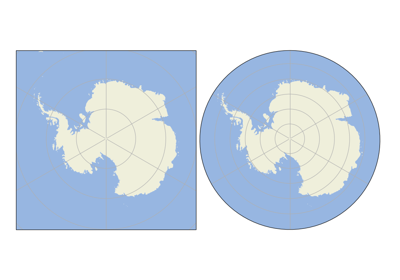
Custom Boundary Shape
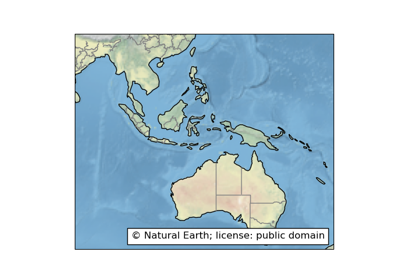
Feature Creation
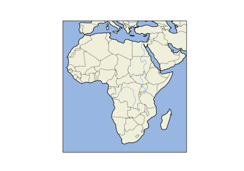
Features
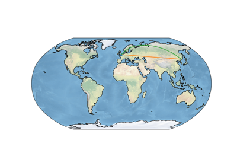
Global Map
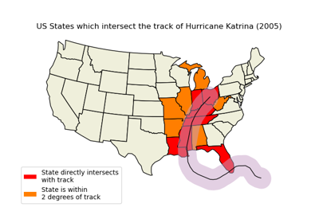
Hurricane Katrina

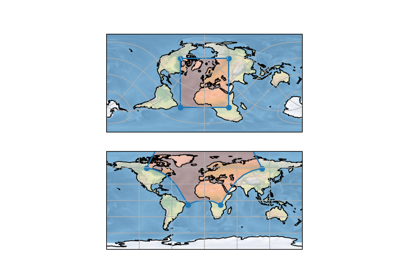
Rotated pole boxes
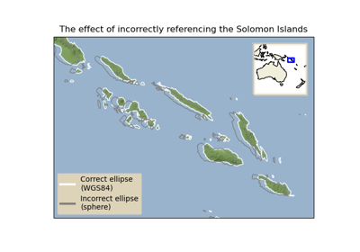
The effect of badly referencing an ellipse
The effect of badly referencing an ellipse

Scalar data#
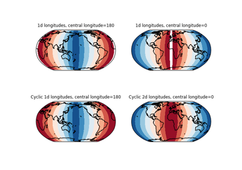
Adding a cyclic point to help with wrapping of global data
Adding a cyclic point to help with wrapping of global data

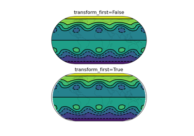
Contour transform options
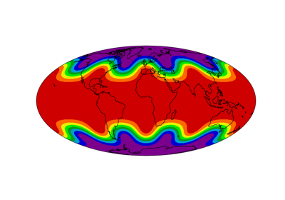
Filled contours
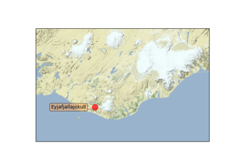
Map tile acquisition
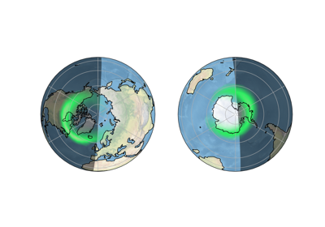
Plotting the Aurora Forecast from NOAA on Orthographic Polar Projection
Plotting the Aurora Forecast from NOAA on Orthographic Polar Projection

Reprojecting images from a Geostationary projection
Reprojecting images from a Geostationary projection
Vector data#
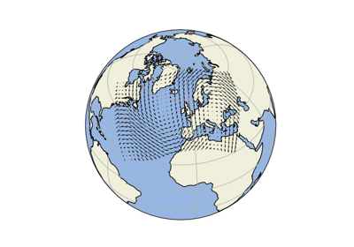
Arrows


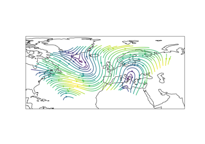
Streamplot
Web services#

Displaying WMTS tiled map data on an arbitrary projection
Displaying WMTS tiled map data on an arbitrary projection
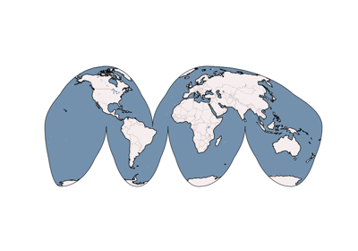
Interactive WMS (Web Map Service)
Interactive WMS (Web Map Service)


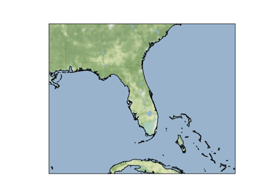
Web tile imagery
Gridlines and labels#
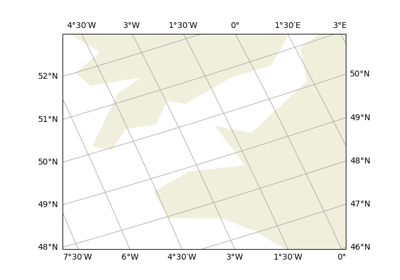
Gridlines and tick labels

Miscellanea#

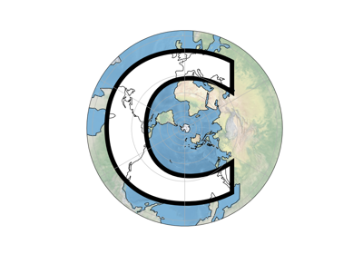
Cartopy Favicon
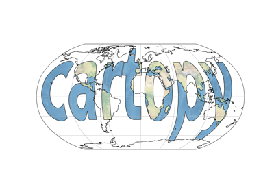
Cartopy Logo


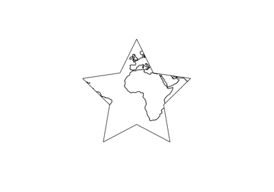
Modifying the boundary/neatline of a map in cartopy
Modifying the boundary/neatline of a map in cartopy
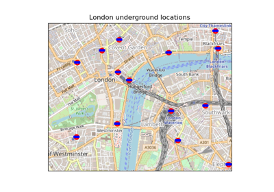
Tube Stations
UN Flag